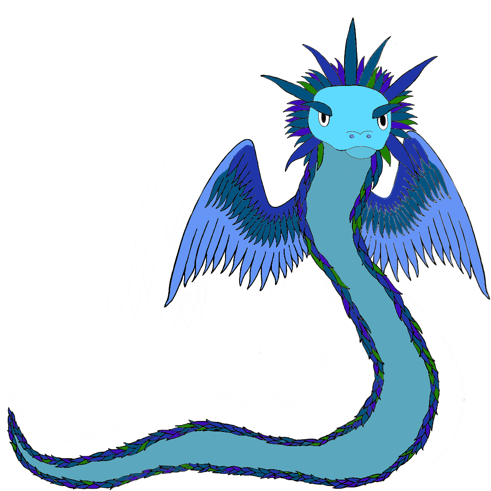

Image created by: TaraFaeBelle
Morgan, known as Clockwocket on Twitch and elsewhere online, is an aspiring author, a tabletop gamer,a beginning coder, and a yarn-crafter. He is in his early forties, so not a young buck by any means, but makes up for it by being nowhere near as mature as his numerical age might indicate. He tries for wisdom and maturity when appropriate, but like the rest of humanity, is still learning.
Morgan is diagnosed with both ADHD and Bipolar Disorder, and identifies as Nuerodivergent. The last is because getting the proper screening for Autism Spectrum can be difficult as an adult, and getting insurance to cover the screening is even more difficult. Morgan's pronouns are He/Him, and he is a man, although that is not the biology based gender assigned him at birth. If you have a problem with any of that, it is your problem, not his. Any attempt to make it his will see you banned from the channel.
Image created by: Clockwocket
Clockwocket streams primarily to keep himself focused and accountable, and for company while he is working on a variety of different things. His main tasks, at least currently, involve creative writing, learning to code, coding personal projects, tasks related to playing in and storytelling for tabletop RPGs, world-building, and yarncraft in the form of knitting, crochet, and spinning. Clockwocket labels his streams based on the main activity planned for that stream and uses a modified version of the pomodoro method to alternate focused time with break/social time for most activities that will be completed on stream.
All times are in Eastern Standard Time
It has been said that the paradox of tolerance disappears when you view it as a social contract. By participating in the chat, you are agreeing to follow these rules, be polite and civil, and treat the others in the chat with the respect and dignity due all sentient beings. Clockwocket's streams are intended to be a safe space for people from all walks of life, and by participating, you are agree to be tolerant with the other chatters, and not express rhetoric based on hate and intolerance, such as racism, trans or homophobia, abilism, and so on and so forth. If you break the the agreement to to be tolerant, Twitch's policies regarding conduct, or any of these rules, the streamer and mods are no longer obligated to be tolerant of your presence, and will warn or ban you at their discretion
Different people have different tolerance levels for discussions of sensitive subjects. For that matter, something you find normal and everyday may be a sensitive topic for someone else. Further, people watching the stream may have had traumatic life experience that make something that may seem inncocous to others a trigger for them. While it is not okay for someone to make you feel that you did something wrong by crossing a boundary you didn't know about, if you are informed of a boundary please respect it. Clockwocket and his Moderators are the final arbitrators. If Clockwocket or one of the Moderators tells you to stop crossing a boundary, stop.
Even in the unlikely event that someone in the chat, is, in fact a mind reader, it is even more unlikely that they can read your mind long distance, or the minds of everyone chatting. Even if they could, Clockwocket would hope the would be polite enough not to do so without permission. Therefore, if you expect a boundry beyond common sense courtesy to be respected, you will have to inform Clockwocket, and the others in the chat that this is a boundry for you. Please understand that this includes stating that the current topic is triggering for you, and that you will walk away for a set amount of time and you would appreciate if the discussion of that topic could be finished in that time. Clockwocket's streams are intended for adults, and topics of discusion may include mature topics, particularly in regards to maintaining one's mental health and healing from trauma. It is okay to ask to change or drop a specific subject of discusion, and it is okay not to participate in a discussion.
Clockwocket firmly believes that one of the most damaging things their Kindergarten teaches said was "You don't mean that, we are all friends here." It renforced the idea that it is alright to be rude and cruel to those you don't consider 'freinds.' Civilization is based on being able to interact, polietly and without undue rancor, towards those you don't like. In other words, you are not required to like or be friendly with everyone in chat. You are, however, required to be polite to everyone in chat.
It is okay, and even encouraged, to have your own opinions, that differ from those of Clockwocket, the Mods, or other chatters. It is okay to politely discuss these opionions and how you came to form them. It is not okay to insult others or imply they are stupid because they do not agree with you. It is not okay to impose your beliefs and moral code on others as the only 'truth.' This applies to all topics of discussion, not just politics and religion. If discussion is starting to become heated, it is probably time to agree to disagree, and change the subject.
Clockwocket reserves the right to ban someone from chat and his streams at his own discretion, if they are being obnoxious. If you wouldn't say it in person, face to face, you probably shouldn't put it in chat, either. Clockwocket will only use this rule if someone is being a deliberate donkey, and does not stop when asked.